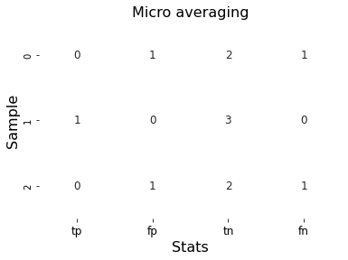

!pip install pytorch-lightning
!pip install seabornIn my last post I showed how to use torchmetrics to implement classification metrics for the Oxford-IIIT pet dataset. We saw that the average keyword had to be set to micro for accuracy and macro for the \(F1\) score, so that the metrics were consistent with scikit-learn. In this post, I’ll delve deeper into these keywords, and how they affect the metrics in question. In a following post, I’ll also discuss mdmc_average, which is relevant for multiclass image segmentation.
Note that this keyword is relevant for binary classifiers, which are also mutliclass clasffiers with \(2\) classes.
The examples below will look primarily at accuracy and precision, but note that precision can be replaced by recall, \(F1\) score, jaccard index, etc.
import torch
import sklearn
# Set the seed for reproduciblity.
torch.manual_seed(7)
import seaborn as sns
import matplotlib.pyplot as plt
from matplotlib.colors import ListedColormapTo better understand the metrics, we’ll work with a \(4\) class problem with \(n = 100\) samples. Classes \(0\) and \(3\) will have a probability of occurence of \(\frac{1}{15}\), class \(1\) will have a probability of \(\frac{2}{3}\), and class \(2\) will have a probability of \(\frac{1}{5}\). We can generate data having this distribution using torch.multinomial below.
weights = torch.tensor([1, 10, 3, 1], dtype=torch.float)
num_classes = len(weights)
shape = (100,)
size = shape[0]
output = torch.multinomial(weights, size, replacement=True)
target = torch.multinomial(weights, size, replacement=True)For example, the output looks like:
outputtensor([1, 1, 2, 1, 2, 2, 1, 1, 2, 2, 0, 0, 1, 0, 1, 2, 0, 3, 1, 3, 2, 2, 1, 1,
2, 1, 3, 2, 1, 3, 1, 1, 1, 1, 1, 0, 1, 0, 2, 1, 1, 2, 1, 1, 1, 1, 2, 1,
1, 2, 0, 1, 1, 2, 1, 2, 3, 2, 2, 2, 2, 1, 2, 1, 1, 1, 1, 1, 1, 1, 1, 1,
1, 1, 1, 3, 1, 1, 1, 1, 3, 1, 2, 3, 0, 2, 1, 2, 1, 1, 1, 1, 1, 1, 1, 1,
2, 2, 1, 1])For our purposes, it’ll be more convienent to work with one hot encoded data.
output_oh = torch.zeros(size, num_classes)
output_oh[torch.arange(size), output] = 1
target_oh = torch.zeros(size, num_classes)
target_oh[torch.arange(size), target] = 1Then the first \(10\) samples of the output looks like:
output_oh[:10]tensor([[0., 1., 0., 0.],
[0., 1., 0., 0.],
[0., 0., 1., 0.],
[0., 1., 0., 0.],
[0., 0., 1., 0.],
[0., 0., 1., 0.],
[0., 1., 0., 0.],
[0., 1., 0., 0.],
[0., 0., 1., 0.],
[0., 0., 1., 0.]])Micro statistics
After the one hot encoding, the output and target tensors each have shape \([N, C]\). Due to this multidimensionality, there are at least two ways to compute the confusion matrix. For the first way, we calculate the confusion matrix of each sample over all classes:
from torchmetrics.classification import StatScores
# Use reduce="samples" to calculate the confusion matrix per sample.
stat_scores = StatScores(num_classes=num_classes, reduce="samples")
stats = stat_scores(output_oh, target)
tp, fp, tn, fn, _ = stats[:, 0], stats[:, 1], stats[:, 2], stats[:, 3], stats[:, 4]For example for the first \(3\) samples, the confusion matricies are:
ax = sns.heatmap(torch.vstack([tp[:3], fp[:3], tn[:3], fn[:3]]).T.numpy(),annot=True,
annot_kws={"fontsize":12},linewidths=2, cbar=False,cmap=ListedColormap(['white']))
ax.set_xlabel("Stats", fontsize=16)
ax.set_ylabel("Sample", fontsize=16)
ax.set_title("Micro averaging", fontsize=16)
ax.set_xticklabels(["tp", "fp", "tn", "fn"], fontsize=12)
plt.show()
The confusion matrix for the entire classifier is then obtained by summing over the samples:
ax = sns.heatmap(torch.tensor([[tp.sum(), fn.sum()], [fp.sum(), tn.sum()]]).numpy(),annot=True,
annot_kws={"fontsize":12},linewidths=2, cbar=False,cmap=ListedColormap(['white']))
ax.set_xlabel("Predicted", fontsize=16)
ax.set_ylabel("Actual", fontsize=16)
ax.set_yticklabels(["T", "F"], fontsize=14)
ax.set_xticklabels(["P", "N"], fontsize=14)
plt.show()We could’ve also reached the above answer using:
stat_scores = StatScores(num_classes=num_classes, reduce="micro")
stats = stat_scores(output_oh, target)
stats[:4]tensor([ 40, 60, 240, 60])From which various metrics like accuracy, precision, and recall can be calculated. When these metrics are calculated this way, the averaging technique is called micro.
For example, the accuracy, i.e. the number of correctly classified samples divided by the total samples, is
((tp.sum())/(tp.sum()+fn.sum())).item()0.4000000059604645Similarly, using torchmetrics we get
from torchmetrics.functional.classification import accuracy
accuracy(output_oh, target,num_classes=num_classes,average="micro").item()0.4000000059604645Which is precisely what scikit-learn calculates:
sklearn.metrics.accuracy_score(target, output)0.4Since the false positive and false negative counts are always the same, all other metrics like precision and recall
are the same as accuracy. For example the precision is
((tp.sum())/(tp.sum()+fp.sum())).item()0.4000000059604645Similarly, using torchmetrics we have:
from torchmetrics.functional.classification import precision
precision(output_oh, target,num_classes=num_classes,average="micro").item()0.4000000059604645This is why micro statistics are rarely mentioned, because they don’t give rise to new metrics.
Macro statistics
The second way to calculate the confusion matrix is to calculate the statistics for each class separately over all samples.
stat_scores = StatScores(num_classes=num_classes, reduce="macro")
stats = stat_scores(output_oh, target)
tp, fp, tn, fn, _ = stats[:,0], stats[:, 1], stats[:, 2], stats[:, 3], stats[:, 4]which gives the confusion matricies for classes \(0\), \(1\),…,\(3\).
ax = sns.heatmap(torch.vstack([tp, fp, tn, fn]).T.numpy(),annot=True,
annot_kws={"fontsize":12},linewidths=2, cbar=False,cmap=ListedColormap(['white']))
ax.set_xlabel("Stats", fontsize=16)
ax.set_ylabel("Class", fontsize=16)
ax.set_title("Macro averaging", fontsize=16)
ax.set_xticklabels(["tp", "fp", "tn", "fn"], fontsize=12)
plt.show()From which various metrics like precision, and recall can be calculated by calculating the metric for each class and then averaging. When these metrics are calculated this way, the averaging technique is called macro.
For example, the precision, is
(tp/(tp + fp)).mean().item()0.20424403250217438Similarly, using torchmetrics we have:
from torchmetrics.functional.classification import precision
precision(output,target,num_classes=num_classes,average="macro").item()0.20424403250217438which is the same as scikit-learn:
# Note that scikit-learn takes the target as the first argument instead
# of the second.
sklearn.metrics.precision_score(target, output,average="macro")0.2042440318302387Finally, it’s important to note that class \(1\) is much more probable than the others, hence its precision score should be weighted differently than the others. In other words, when working with an imbalanced dataset like this one, it makes sense to use a weighted average:
precision(output,target,num_classes=num_classes,average="weighted").item()0.43180373311042786Which clearly paints a different picture of the quality of the predictions.
In conclusion when dealing with balanaced datasets, accuracy using the micro average is sufficient, while the \(F1\) score with the weighted average is more accurate for imbalanaced datasets.